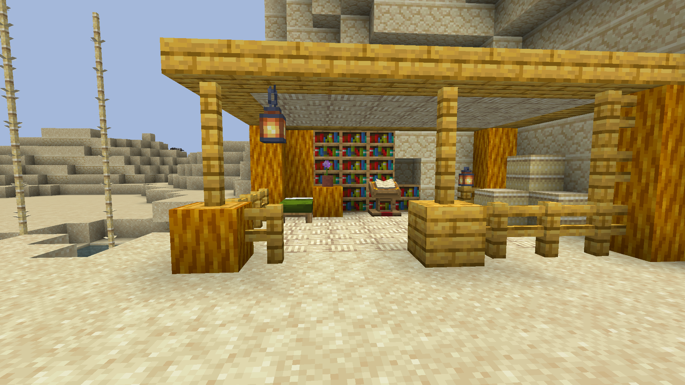
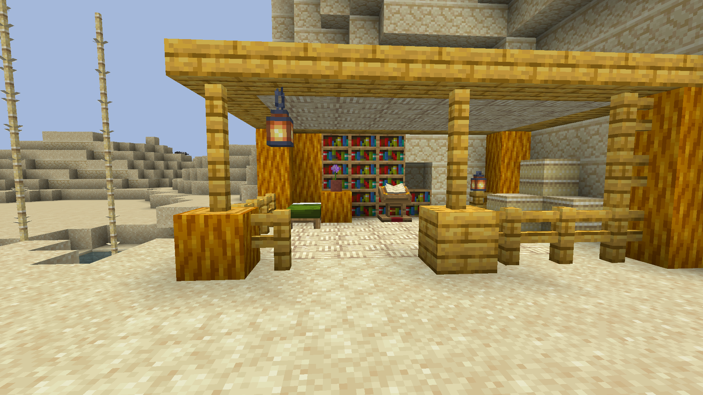

|
Civilisations of Baedoor is third Baedoor mod and offspring of Wastelands, aimed on implementing
mechanics and additions that would make original mod too vast to be good.
Civilisations was built upon two ideas - first, offering proper insight into Baedoor lore via "transdimensions"
which connect Minecraft and Baedoor universes (also explaining why one appear in the other). You would
visit few dimensions inhabited by various civilisations and see their everyday life.
Second idea was inspired somehow by mods such as Millenaire and games like Mount & Blade - as a player you would
get unique opportunity to build your own empire, meaning you will be able to hire villagers and mercenaries to
build and fight for you.
The mod ideas were massive and it's no surprise that despite initial enthusiasm and actually achieving quite
a lot, majority of those plans weren't achieved yet. The mod also was the only one to get actual rewrite from
MCreator to code, which took a lot of time.
Currently, it is in similar situation of Wastelands - where it requires planning and time investment to be
brought back to life, having assets and general design idea already in.
Team
- Developers
- Toma400 : lead
- Dylanvhs : pixel artist
- Contributors
|
 


|